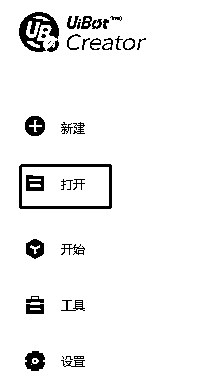

来源：https://fqlleg2dnfa.feishu.cn/docx/GggKdRRd5o5crGxHuowckobyncd
目前实践应用于电商&小红书&公众号领域，有需要可深度线下交流。V：zhuhou-xi
获取用户给定关键词下的微信爆款文章。
操作原理：通过旧版微信，搜索给定关键词下的爆款文章，复制链接保存到表格，抓取链接里面的文章内容。
可以获取多个下拉页面的爆款文章，可以获取关键词下的最新文章，可以获取多个关键词的爆款文章，并写入区分关键词。
https://mydown.yesky.com/pcsoft/44417133/versions/ 微信历史版本
直接下载 微信电脑版 3.9.0.28 大小：165MB|更新： 2023-02-13
（该版本之后，看一看搜一搜的功能区分了页面板块，机器人就不是很好读取）
最新更新等待版本8.18复制界面有比较多的变化
点击打开

导入机器人安装包
点击运行按钮
（尚未在其他电脑测试，目前是以按钮点击形式，在本地我的一台电脑中支持）
注意先打开微信页面（登录状态）
标题栏使用sheet1文库
文章内容使用sheet2部分
机器人采用用完即删的策略，以防文案重复，所以使用完成的标题和文字都会被删除
A1 暂时还不能，进一步的还在测试研究，微信端反爬虫很厉害
Q2，使用注意事项：
先登录好微信，保持桌面只打开微信客户端页面
看视频
机器人运行前，务必处于微信登录且最大化状态，且版本为3.02。